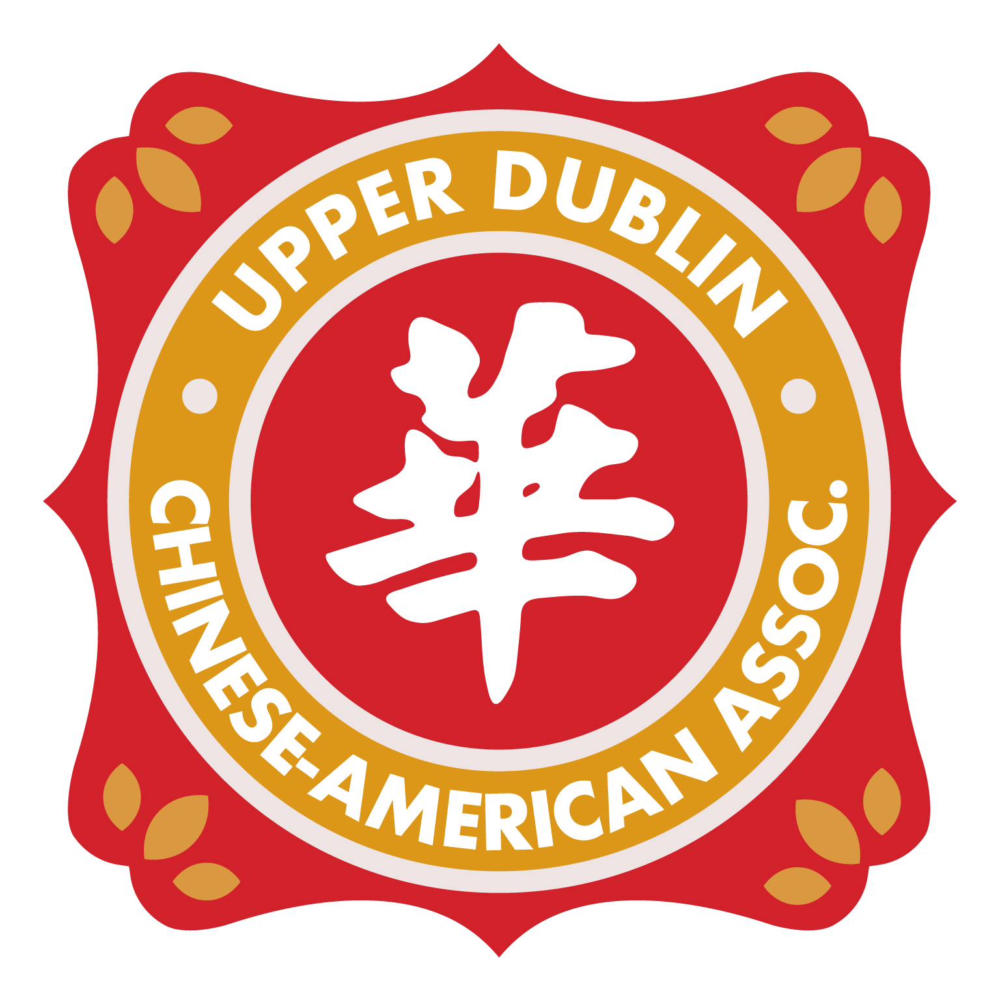
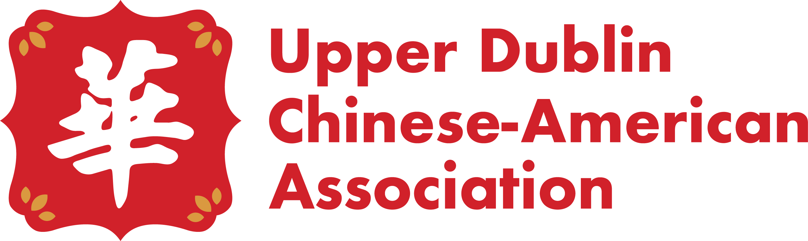
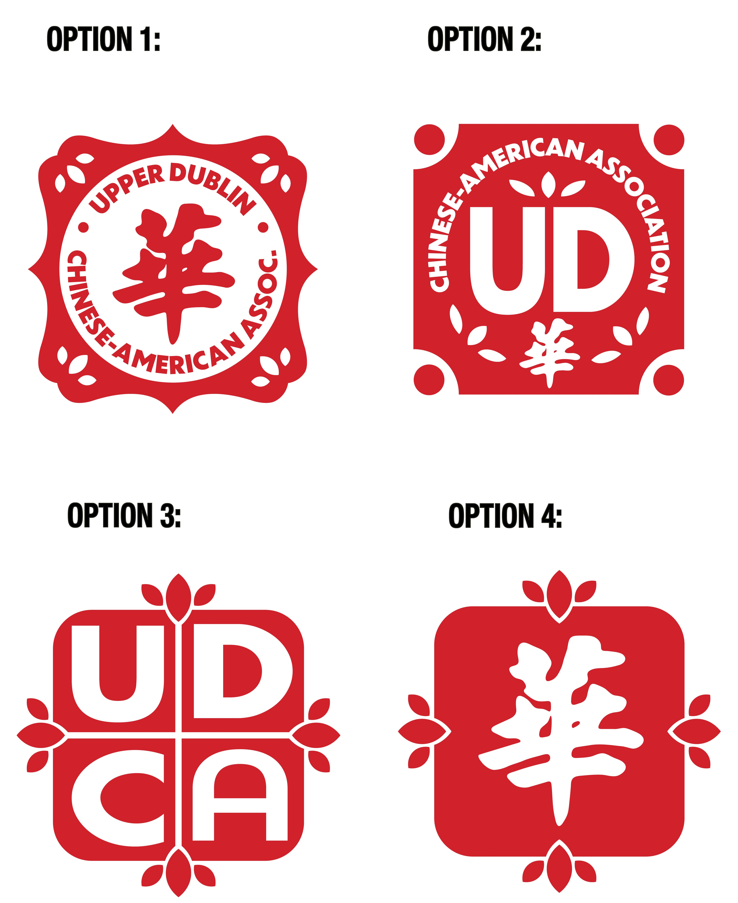
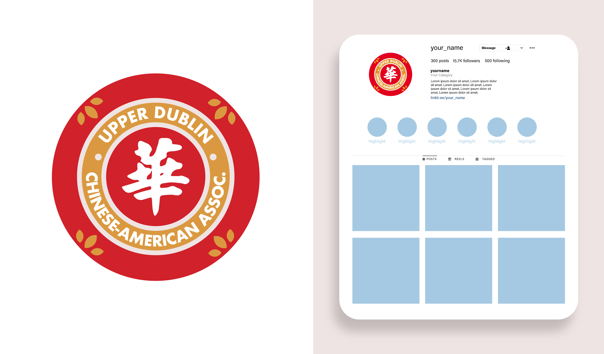
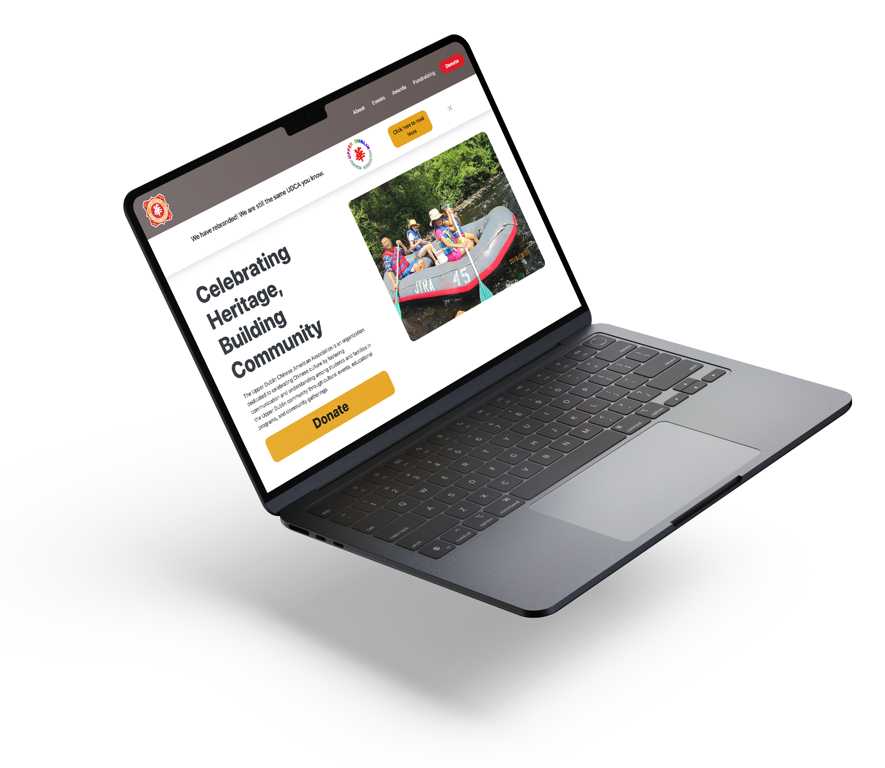
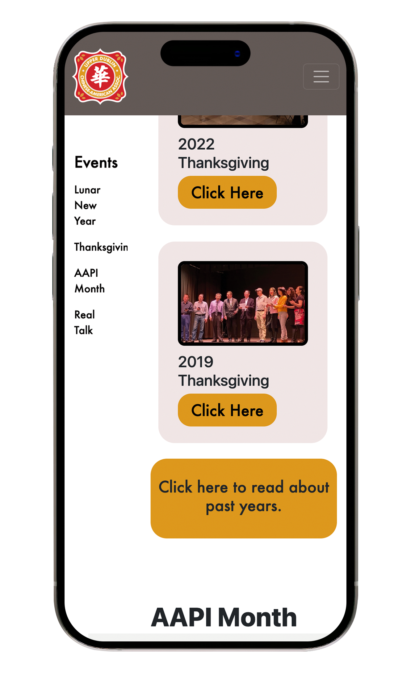
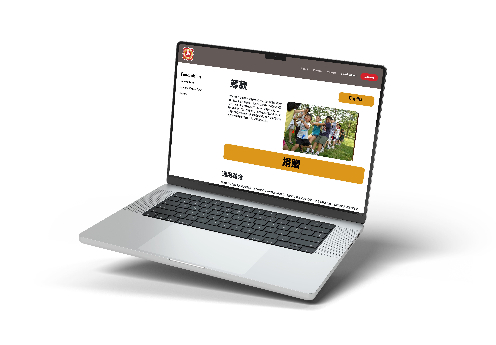

UDCA Branding
UDCA is abbreviated for the Upper Dublin Chinese American Association. This was a non-profit based in Philadelphia area that focused on supporting Chinese American students and familes while also celebrating their culture and traditions.
For the Upper Dublin Chinese American Association, I developed a visual identity that honors cultural heritage while presenting a modern, cohesive presence for the organization. The problem that was present in the legacy logo was that it contained multiple fonts, more than 5 colors, and was not vectorized. So in result, they were rapidly losing support and trust.
The redesign draws inspiration from traditional Chinese design elements, particularly the use of geometric shapes. The color palette incorporates classic Chinese reds and gold tones, representing good fortune and strength. These colors were intentionally chosen to reflect cultural pride while maintaining a bold, contemporary look.


Constraints
One of the biggest challenges I faced when designing this brand was the amount of words in the Logo. Because many were not familiar with the organization, it could not be abbreviated. Another thing I had to consider was that it was important to the organization that I include the Chinese Character, "华” or "Huá." This is an abbreviation for China and is commonly associated with Chinese culture and identity.
Solutions
With all of these elements to include, I wanted to ensure that the logo still was clean and was easily digestible. I resolved this by centering it around a circle. That way, it felt symmetrically balanced and the Chinese character was at the center of the logo. Below are some directions I explored.


Web Design
I also built UDCA a website using HTML and css. Their existing site greatly lacked clarity so I focused on clear intuitive navigation and consistent branding. The purpose of the site was to inform about viewers about the organization, events, scholarships, and invite people to donate.

Constraints
One of the biggest challenges I faced when designing this was creating a website that the organization would be able to continually update without touching the code. The events page was meant to show the latest events as well as information for upcoming events.
Another obstacle that I faced was ensuring that the site was mobile friendly and that all the information was understood and organized well.
Solutions
One solution that I came across for editing the web page was a plugin for Google Blogger. The code pulled RSS feed from Google Blogger and continually showed a set number of the most recent blogs posted. That way all the organization has to do is post a blog and the webpage will show and image, title, and link to the remaining blog. In this process, I created a Google Blogger account and started blog templates.
To organize the content, I decided to have two navbars. One was the horozontal navbar on top and the other was the short list of items to the left. This second navbar has a scroll-to effect that takes viewers to sections of the page for that subheading.

The organization was made possible by donations so it was very important that it was a strong call to action. I made a Donate button in the navbar and footer so that viewers constantly had the option to do so. On that note, it was largely important to the community who donated, that some of the text be in Chinese. So I created a button to be placed in the top corner of the pages so that viewrs could toggle back and forth between English and Chinese.
